Kdenlive
A diferencia de Handbrake o Avidemux, Kdenlive es un
editor de video totalmente equipado y capaz de hacer mucho más que solo
clips de video o conversión de videos. Este programa tiene soporte
para combinar docenas de clips de video, en diferentes formatos,
mostrando múltiples pistas de audio y video simultáneamente y
transcodinando de una a la otra, y procesar proyectos finalizados de
video a una variedad de formatos. A través de esta sección vamos a
hacer todas estas cosas, y cuando hayamos terminado vas a ser capaz de
crear tus propios videos profesionales.
Empezando
Cuando abres Kdenlive por primera vez (a menos que
otra persona lo haya hecho con tu perfil de usuario) el programa te va
a solicitar una carpeta (folder) en la cual se van a almacenar todos los
archivos de tu proyecto. Es importante escoger un carpeta adecuada para
esto, porque cuando vayas a guardar tu proyecto, este carpeta no va a
cambiar. En ese momento podrás escoger un lugar diferente en el cual
guardar tu archivo ".kdenlive", pero toda la data e información de tu
proyecto va a estar en la carpeta que estás escogiendo ahora. Si
necesitas cambiar este carpeta, puedes hacerlo yendo a Preferencias
-> Configurar Kdenlive... -> Entorno -> Carpetas predefinidas
en el recuadro de Carpeta de Proyecto (Project Folder).
Para
este proyecto en específico, puedes cambiar la ubicación de la carpeta
que contienen los archivos en Proyecto -> Preferencias del proyecto
en el recuadro de Carpeta de Proyecto. Además, en ese recuadro puedes
escoger el formato que quieres para tu video final. En este caso vamos
a escoger "VGA Widescreen NTSC". Este formato nos va a dar un video
progresivo con resolución de 854x480 (16:9) y 30000/1001 (o 29.97) fps.
Antes de comenzar a editar, vamos a crear y guardar nuestro archivo
de proyecto. Ya que ya hemos ubicado nuestro proyecto en la carpeta
deseado, probablemente podemos nombrar el proyecto con un nombre
descriptivo y guardarlo en ese carpeta. En el futuro podemos tener
otros proyectos guardados en ese folder también, en cuyo caso podríamos
compartir recursos (videos, imágenes, audio, etc.) con el proyecto
actual y así ahorrar espacio.
Una vez hayas creado y guardado tu proyecto, comenzamos! Lo primero
que vas a quere hacer es importar algunos clips. Puedes obtener los
clips que vamos a usar en este proyecto aquí (estos son clips de la
película Big Buck Bunny; puedes ver el video completo aqui):
Intro.mkv
BunnyPrep.mkv
BunnyRelax.mkv
RedSquirrel.mkv
GraySquirrel.mkv
FlyingSquirrel.mkv
BigBuckBunny-stereo.flac
freestylemix_-_hisboyelroy_-_Revolve.mp3
Descarga todos estos clips a tu disco duro. Luego en Kdenlive con
el recuadro de Arbol del proyecto visible, haz clic en el botón de
Agregar clip. Usa este recuadro para seleccionar cada uno de los
archivos que acabas de descargar.
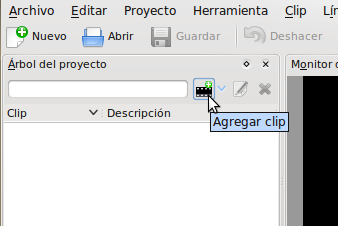
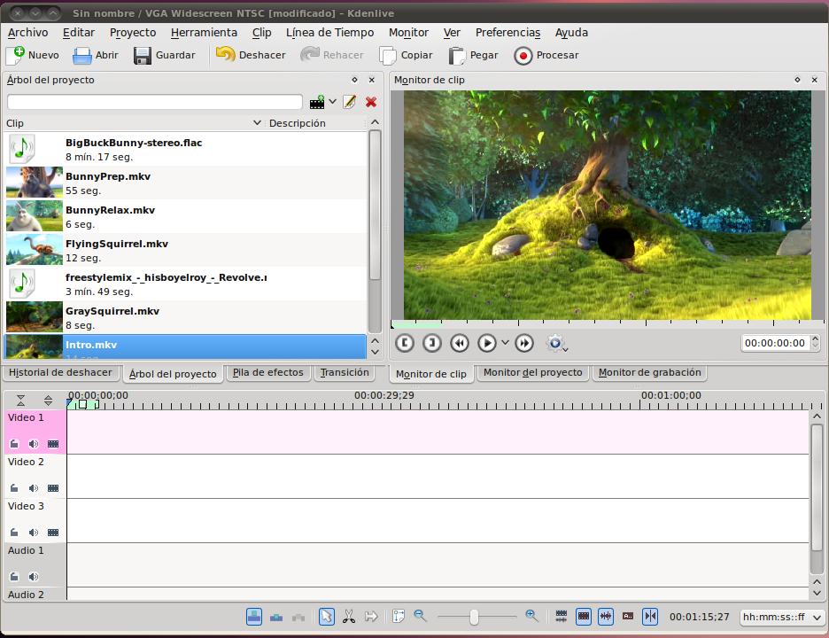
Puedes crear carpetas dentro de tu proyecto para organizar todos
tus clips. Sólo haz clic derecho dentro del árbol del proyecto y
selecciona Crear carpeta. Hagamos tres carpetas y llamémoslos Video,
Audio y Texto. Ahora puedes arrastrar todos los clips a su carpeta
apropiado.
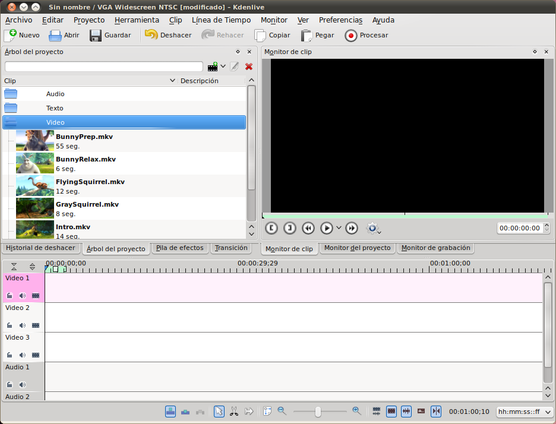
Ahora estamos listos para crear nuestro primer video. Primero
arrastra el clip de Intro hasta la pista llamada Video 1 en la parte de
abajo del programa. Luego coloca el clip de Bunny Prep inmediatamente
después del Intro clip en la misma pista.
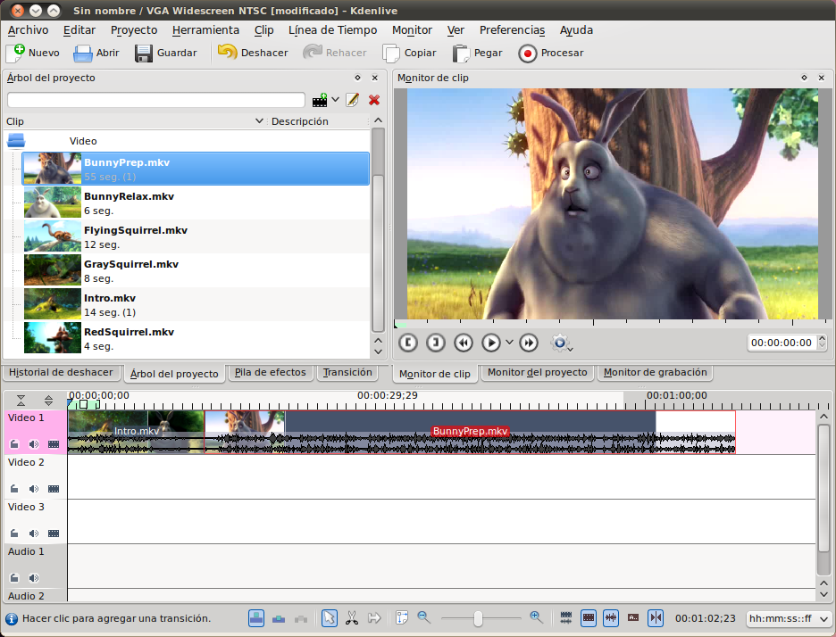
Ahora que tenemos el primer corte de un video, podemos ver el corte
en el Monitor del proyecto. Solo tienes que hacer clic en la pestaña
llamada "Monitor del proyecto" y luego otro clic el botón de Reproducir.
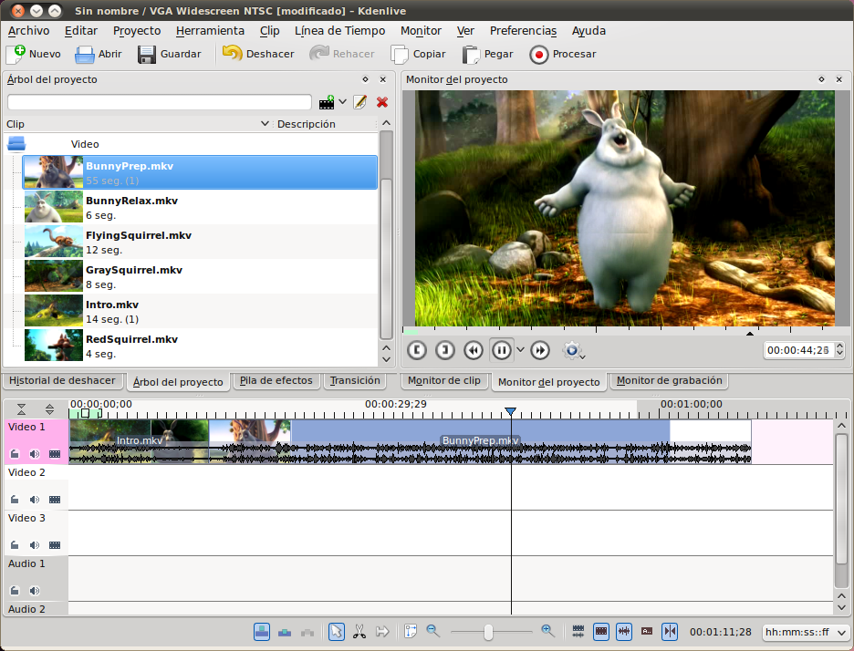
Nota la línea (igual que en Audacity) que marca la ubicación del video a lo largo de la secuencia de tiempo (el "timeline").
Una vez has verificado el video y ves que todo se ve bien,
necesitamos procesar el proyecto a un archivo. Más adelante vamos a
aprender más sobre lo que significa procesar un proyecto (también
conocido como "hacer un rendering"), pero por ahora nos conformaremos
con saber que este proceso toma lo que ves en el monitor del proyecto y
lo deposita en un archivo en el formato de tu preferencia. Haz clic en
el boton de Procesar para comenzar.
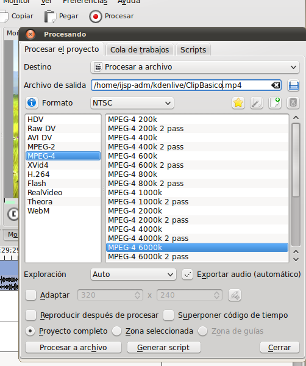
En
el recuadro de Procesar, vamos a seleccionar un tipo de formato para
nuestro archivo. También escogeremos un nombre de archivo, por ejemplo
"ClipBasico.mp4". Luego escojamos MPEG-4 de entre la lista de formatos
de codificación, y usemos la opción 6000k (un sólo paso por ahora, para
acelerar el proceso). Cuando termines, puedes hacer clic en "Procesar a
archivo".
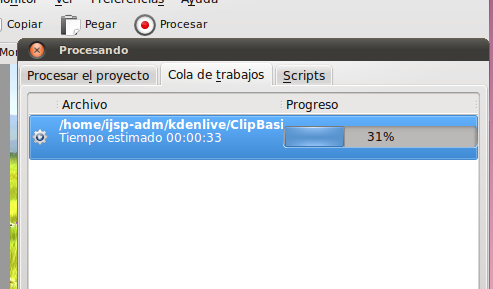
Una
vez el archivo termine de procesarse, puedes salir al directorio en el
que lo guardaste, y abrirlo en un programa de video para ver cómo se ve.
Seleccionando Clips y Transiciones
Para esta sección, usemos
algunas de las partes en las que Bunny se está preparando para la
pelea. Vamos a poner estas partes cerca de la escena final en la que
Bunny se está relajando en el prado. (Remueve todo lo demás en la
secuencia).
Para comenzar, en el Arbol del proyecto, haz clic en el clip "BunnyPrep.mkv". Este clip va a aparecer en el Monitor del clip.
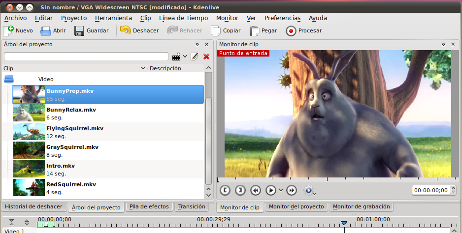
Desde aquí puedes usar el botón de reproducir junto con los botones
de avanzar y retroceder para ver a lo largo de todo el clip. Además, al
igual que en Aidemux hay dos botones que te permiten escoger un punto
de comienzo y un punto final (los botones "[" y "]"). Usemos esto para
crear una selección de la escena en la que el conejo entra al bosque y
hala la viña. Si tienes problemas ubicando el comienzo y el final de
esta selección, puedes usar el reloj del proyecto para avanzar o
retroceder de imagen en imagen. el formato del reloj es
"hh:mm:ss;frame", necesitamos escoger desde cerca de 00:00:09;27 hasta
00:00:17;03 - poco más de 7 segundos. (En versiones antiguas de
Kdenlive que muestran el reloj en un formato distinto, estos puntos son
00:00:08;08-00:00:14;08)
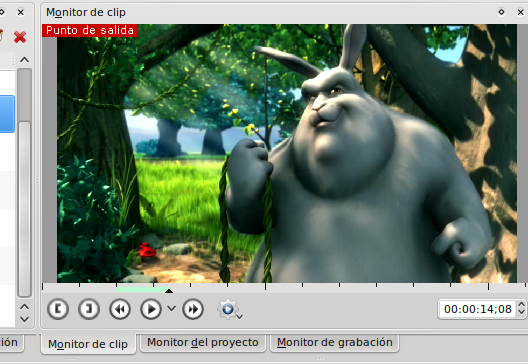
Una vez tengas la selección en el monitor del clip, haz clic en la
imagen en el video y arrástrala hacia una de las pistas de video en el
área de la secuencia/timeline.

Ahora vamos a añadir un par de clips adicionales a esta pista de
video. Primero, toma el clip BunnyRelax.mkv entro y arrástralo hacia la
secuencia.
Para nuestro tercer clip, vamos a seleccionar otra porción del clip BunnyPrep.mkv, en la cual el conejo se está pintando la cara
(00:00:47;24-00:00:51;03, o para versiones antiguas
00:00:39;25-00:00:42;17). Luego arrastra esta selección a la pista de Video 1 para terminar.
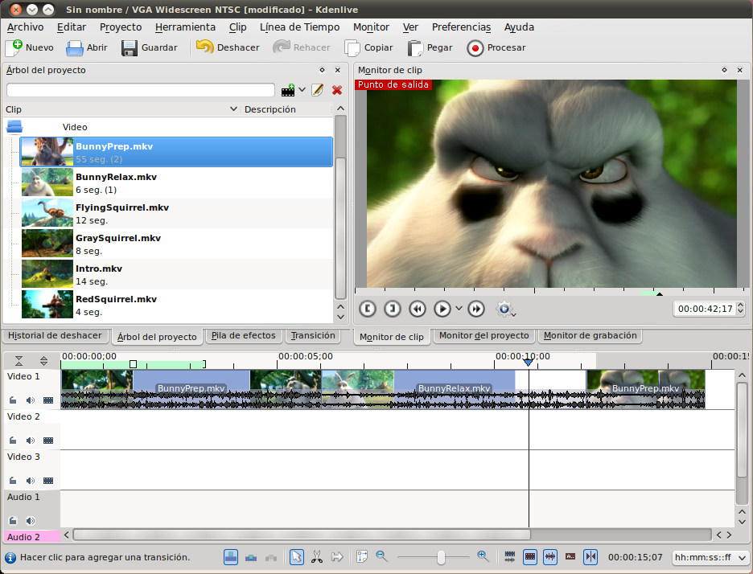
Un aparte breve - Conoce la Barra de Herramientas

La barra de herramientas está ubicada a lo largo de la parte inferior de la ventana principal de Kdenlive.
Las herramientas, de izquierda a derecha, son la siguientes:
Modo Normal - En este modo, cuando colocas un nuevo clic en la
secuencia de una pista, Kdenlive sólo te permite colocarlo en un
espacio vacío lo suficientemente largo para que quepa el clip entero.
Modo
de Sobrescribir (overwrite) - En este modo, cuando colocas un clip en
la secuencia, el clip va a empujar hacia adelante todos los clips ya
presentes, para hacer espacio para el nuevo clip.
Modo Insertar - En
este modo, cuando colocas un clip en la secuencia, el clip va a empujar
hacia adelante todos los clips ya presentes, para hacer espacio para el
nuevo clip.
Herramienta de selección - Herramienta normal, te permite arrastrar y mover clips.
Herramienta
de corte - Cada vez que hagas clic en un video en la
secuencia, el video se va a dividir en dos partes en el punto en el que
hiciste clic.
Herramienta de espacio - Mueve el clip en el que haces
clic y todos los clips a la derecha de este. Util para crear espacio
vacio para luego añadir nuevos clips.
Ajustar el zoom al proyecto - Hacer clic en esta opción hace visible el proyecto entero en el área de la secuencia.
Alejar (zoom out) - Ver más partes del video en la secuencia.
Slider de zoom - Una manera rápida de ver cuán cerca tienes el zoom: arrastra este slider para ajustar tu zoom rápidamente.
Acercarce (zoom in) - Ver menos partes del video / ver más cerca dentro de la secuencia.
Dividir audio y video automáticamente - Con esta opción, cuando
colocas un clip en la secuencia que contienen una pista de audio, esta
herramienta mueve el audio a su propia pista.
Mostrar imágenes (thumbnails) de video - Muestra la imagen inicial y la imagen final (si hay espacio) de cada clip.
Mostrar imagen de audio - Muestra la forma de onda (waveform) debajo del clip.
Mostrar comentarios de marcadores - Si colocas marcadores en tus clips con notas, esto los hace visibles.
Snap - Cuando colocas un clip en la secuencia, cerca de otro clip
(incluyendo clips en pistas diferentes), esta herramienta va a mover el
nuevo clip hasta que esté alineado con el clip ya existente.
Ubicación Actual en Secuencia - El punto de tiempo o número de imagen en el que el cursor (y monitor de proyecto) está ubicado.
Selector de formato de tiempo - Usa esta herramienta para convertir el
formato hh:mm:ss;frame al formato de número de frame/imagen.
Ahora que hemos aprendido sobre todas estas herramientas, regresemos a nuestros clips.
Transiciones
Si vemos el video que tenemos hasta ahora desde el principio, en el
monitor del proyecto podemos notar que hay un corte súbito en la
transición entre cada uno de los tres clips (si tu monitor del proyecto
no funciona bien, siempre puedes procesar el video a un archivo, de
menor resolución para avanzar, y ver el video desde otro programa como
VLC). Muchas veces, estos cortes súbitos son la mejor manera de hacer
una transición, con un clip cambiando instantáneamente al próximo clip.
Cuando ves muchos shows de television: programas de comedia, de
noticias, comerciales, etc... todos tienen muchos cortes (a veces
docenas de cortes por minuto) de un clip (o ángulo) al próximo. Esto es
perfectamente normal, y nuestros ojos están acostumbrados a reconocer
la transición, por lo que no nos molesta. Para demonstrar esto, vuelve
al clip de BunnyPrep.mkv desde el principio, y cuenta cuántos cortes
hay en el clip (¡hazlo ahora antes de seguir leyendo!). Increíble, no?
En ese corto clip (poco más de un minuto) hay 22 cortes diferentes! La
primera vez que lo vemos, tal vez sólo notamos un par de cortes que
eran cambios de escena importantes.
Para continuar con nuestro clip: las transiciones que cortan
súbitamente de un clip a otro usualmente son apropiadas, pero estos
clips fueron escogidos especialmente para este proyecto porque no
conectan bien unos con otros. el corte es simplemente demasiado súbito.
Por esto, necesitamos añadir un efecto de transición para que el cambio
sea más agradable.
Vamos a comenzar sobreponiendo estos videos un poco. Para hacer
esto, puedes mover el segundo video hacia la pista inferior (Video 2), y
luego moverlo un poco hacia la izquierda. Luego mueve el tercer video
un poco más la izquierda para que los tres videos estén sobrepuestos.
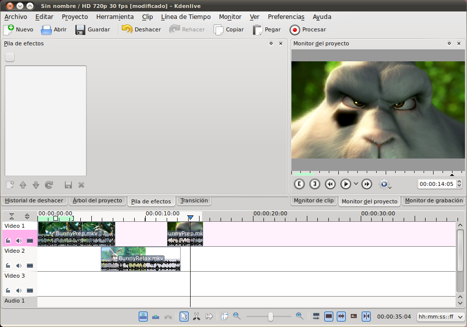
Vas
a notar si miras el video en el Monitor del proyecto que ahora cuando
dos clips están sobrepuestos el clip de la primera pista, Video 1, es
el único que puedes ver - Video 1 tiene mayor prioridad.
Ahora necesitamos aplicar la transición entre los videos. Para
hacer esto, mueve tu cursor sobre la esquina inferior derecha del
primer clip. Puedes ver un pequeño triángulo verde aparecer:
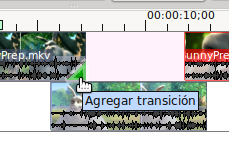
Haz
clic en ese triángulo para crear automáticamente una transición entre
los dos clips. Como opción básica Kdenlive va a crear la transición de
Disolver, que es usualmente la única transición que vas a querer usar
en tus proyectos. Hacer clic en el triángulo también activa la pestaña
de Transición para establecer los detalles de cada transición.
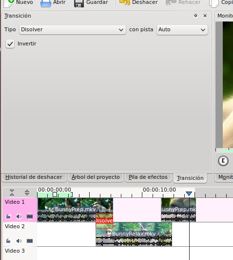
Hay
dos opciones para la transición de disolver: a cuál pista pertenece la
transición (Auto usualmente adivina correctamente, pero aquí queremos
escoger "2" para estar seguros) y "Revetir". Usualmente una transición
va a comenzar con una pista inferior en la secuencia y va a
transicionar a una pista superior (no importa cuál pista esté
sobrepuesta sobre la otra). En este caso, sin embargo, tenemos a la
primera pista (Video 1) en pantalla y queremos transicionar a la
segunda pista (transicionar de superor a inferior). Por eso tenemos que
Revertir la transición.
Hay mucho tipos de transicion, el 95% de los cuales nunca vas a
usar. La transición que muchas personas creen que es divertida, pero es
muy mala para cualquier otra persona viendo el video, es la transición
de "limpiar" (wipe). Evita usarla lo mayor posible! Aquí puedes probar
las demás transiciones y sus opciones para ver qué más tienes a tu
disposición.
Luego, queremos aplicar la transición del segundo clip al tercer
clip. Si pasamos el cursor sobre la esquina inferior izquierda del
tercer clip, vamos a ver el triángulo verde. Hacer clic aquí va a
activar la transición de disolver automáticamente al clip. En este
caso, estamos transicionando de la pista 2 a pista 1, así que no hay
necesidad de revertir la orden.
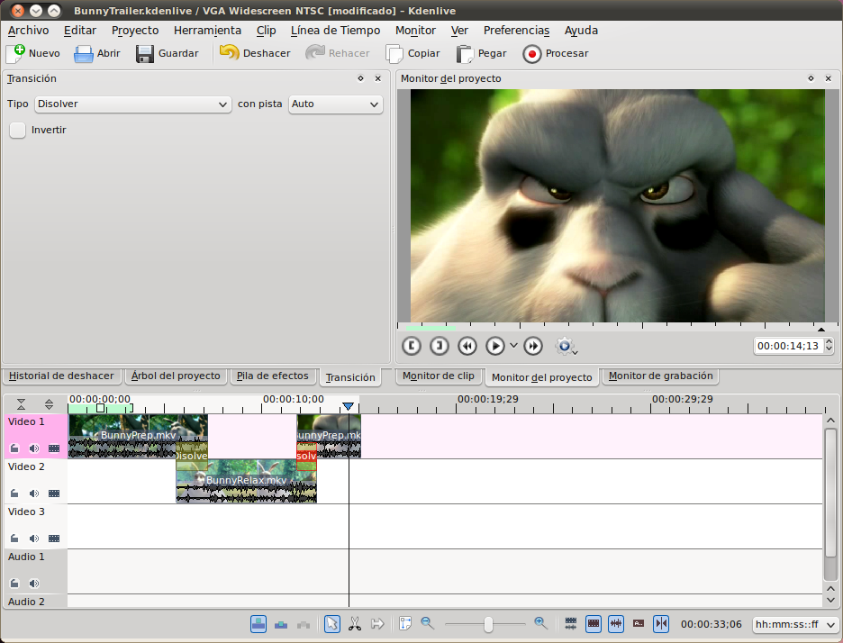
Ahora debes poder ver el video entero y ver las transiciones en el
monitor del proyecto. Si quieres, puedes también procesar este archivo
y verlo en un programa de video diferente.
Añadiendo Texto
Añadir un Título (o Créditos) a nuestro video
es tarea fácil con Kdenlive. Haz clic derecha en tu carpeta de texto en
el Arbol del proyecto y selecciona Agregar clip de título. Esto va a
producir una nueva ventana en la que puedes escribir texto (o colocar
fotos y gráficos).
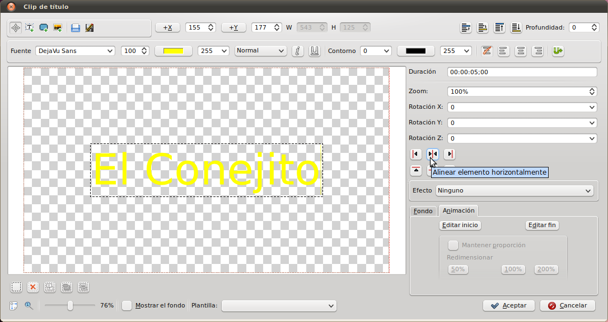
Una vez termines, puedes cambiar el nombre de este nuevo objeto en
el Arbol del proyecto haciendo doble clic en el nombre actual.
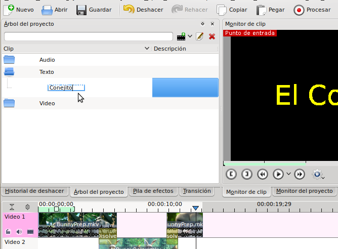
Ahora queremos añadir este título a nuestra película, pero primero
debemos hacer espacio. Selecciona todos los clips que tenemos (y las
transiciones disolver) y mueve todo una línea hacia abajo, de manera que
la piste 1 quede libre. Ahora podemos añadir nuestro título "El
Conejito" al frente. Nota que esta acción automáticamente genera una
transición de tipo "Componer" (Composite) (Componer es un término para describir
el tener múltiples videos en pantalla simultáneamente).
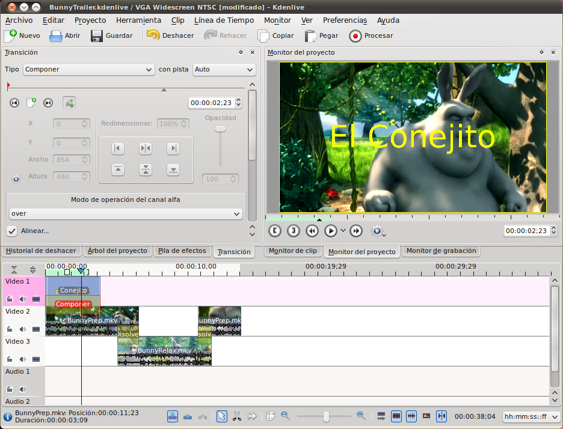
Otra cosa que podemos hacer es añadir una transición al comienzo
del primer clip de video, para que el video comienze con una pantalla
oscurar y luego el clip vaya apareciendo gradualmente. Para hacer esto,
selecciona el video en la secuencia (ahora en la pista número 2). Luego
haz clic-derecho en el video y selecciona Agregar efecto -> Fundido
-> Fundido desde negro. (o solo Efecto de Video -> Fundido desde
negro en el version mas vijeo).
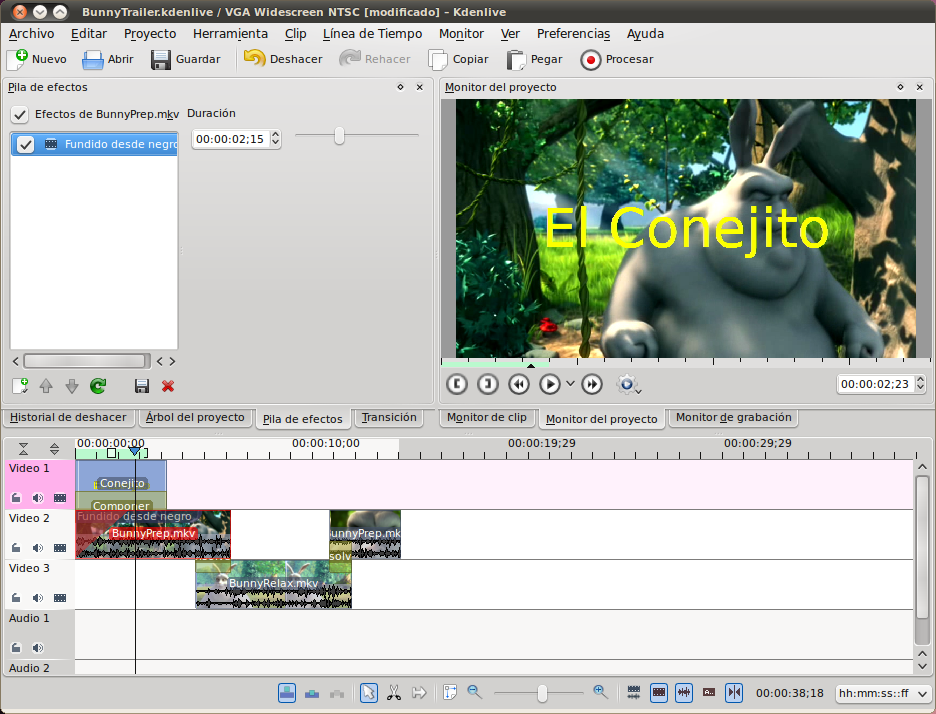
Esto
va a colocar un triángulo sobre la esquina superior derecha de ese clip
en la secuencia. Puedes arrastrar este triángulo hacia la derecha o
hacia la izquierda para hacer que la transición dure menos o más tiempo
para completarse.
También podemos hacer títulos que no aparecen sobre ningún video,
sino que sólo tienen un trasfondo negro. Por ejemplo, podemos crear un
título con créditos y licencia para que aparezca al final del video.
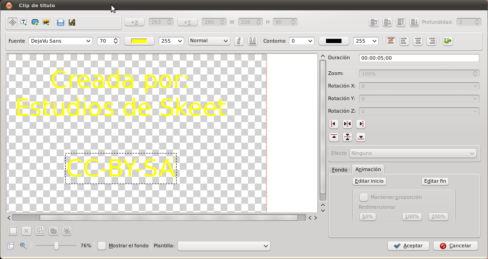
Luego colocamos este título justo después del último clip de video.
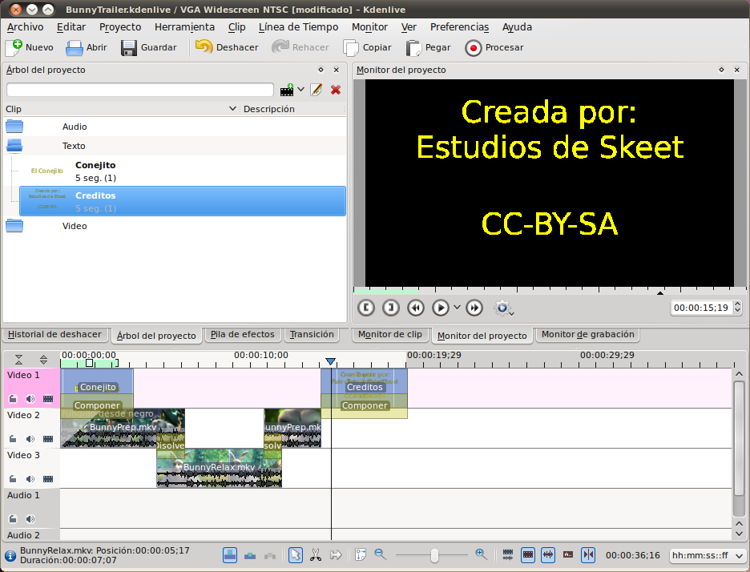
Cuando
estés satisfecho con tu video hasta este punto, puedes procesarlo a un
archivo y verlo en otro programa de video en tu computador.
Composición Básica
Una composición de videos ocurre cuando
múltiples clips aparecen en un video a la misma vez. Hay una variedad de
usos para esto. Uno de los usos que vimos en la sección anterior es el
de sobreponer texto sobre un video existente. En esta sección, vamos a
usar las herramientas de composición de Kdenlive para hacer que tres
video diferentes aparezcan en tres partes distintas de la pantalla, y
luego vamos a insertar esa composición dentro de un clip ya existente en
nuestra secuencia del proyecto.
Antes de añadir objetos nuevos a nuestra secuencia, vamos a crear
una pista nueva. Haz clic-derecho en la pista Video 3 y selecciona
"Insertar Nueva". Queremos colocar la nueva pista de video justo
después de Video 3.
Ahora, creemos un par de títulos. Uno de ellos solo dirá "Vs.", y
el otro dirá "Los Villanos". Ahora mueve los créditos hacia la derecha
en la secuencia y añade estos dos nuevos títulos entre el video ya
existente y los créditos. El título de "Vs." debe ser corto y el de
"Los Villanos" un poco más largo.

Ahora puedes poner el título "Vs." dentro de la secuencia. Cuando
colocas el título de los villanos, colócalo en la pista nueva que
creamos. Vas a tener que mover los créditos para crear suficiente
espacio.
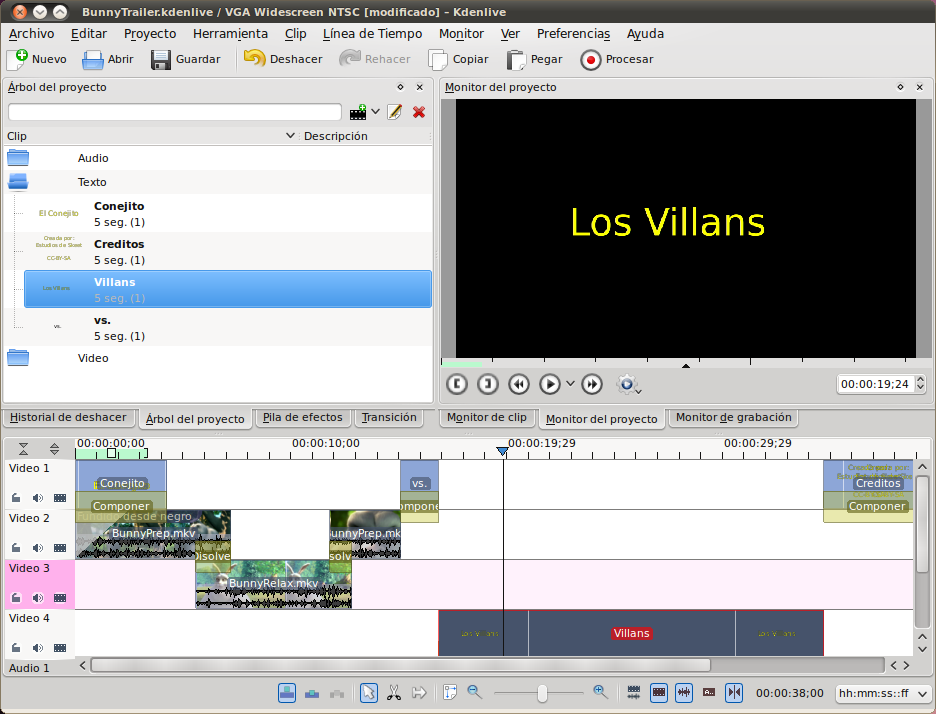
Ahora que tenemos nuestros títulos, vamos a añadir los clips de
video que queremos usar. Coloca FlyingSquirrel.mkv, GraySquirrle.mkv,
RedSquirrel.mkv en las pistas 1-3 (en ese orden). Alínealos de manera
que todos terminen justo cuando los créditos comienzan. (Tal vez tengas
que mover los créditos y estirar los villanos para que
FlyingSquirrel.mkv quepa en el espacio.)
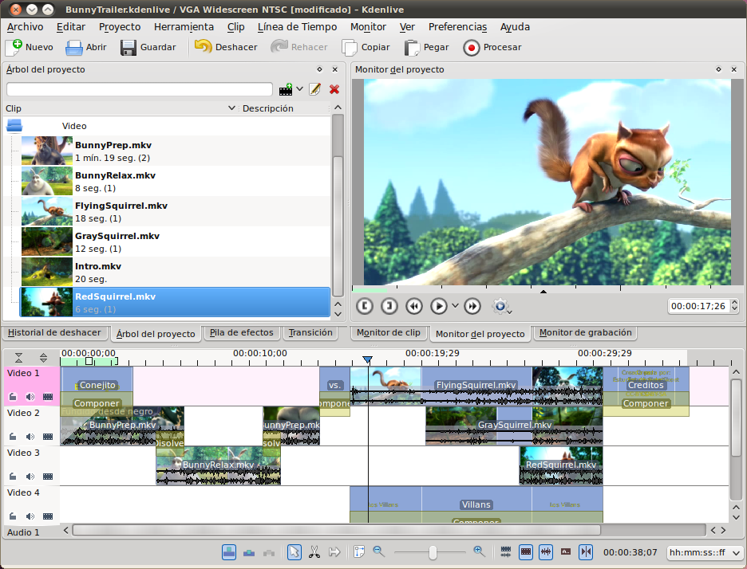
Ahora vamos a comenzar a componer. Haz clic-derecho en el clip de
FlyingSquirrel y selecciona Añadir Transición -> Componer. Luego
estira la transición para que cubra el clip entero (tan largo como el
clip de los villanos).
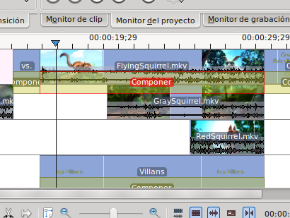
Ahora, si haces clic en la composición debajo del clip del
FlyingSquirrel, vas a ver el pastaña de transiciones aparecer, con las
opciones de la composición. Esta composición en particular es para la
pista 1, y vamos a componerla sobre la pista 4, así que desde el menú
"con pista", selecciona Video 4. Para cualquier composición, es posible
que hayan ocasiones a lo largo de la composición en las que el video se
comporte distinto. Estas son llamadas "keyframes" o "fotogramas clave" (diferentes a las
"keyframes" creadas por un codec al codificar video). Cada "keyframe"
especifica lo que la composición va a hacer hasta el comienzo del
próximo keyframe (o hasta el final del clip). En este caso, solo
queremos que el video aparezca en un recuadro pequeño durante todo el
tiempo, así que no tenemos que añadir ningún "keyframe" excepto el que
ya se ha creado automáticamente al crear la composición. Para llegar a
este "keyframe", oprime el botón de la flecha hacia la izquierda justo
debajo de la secuencia en las opciones de composición.
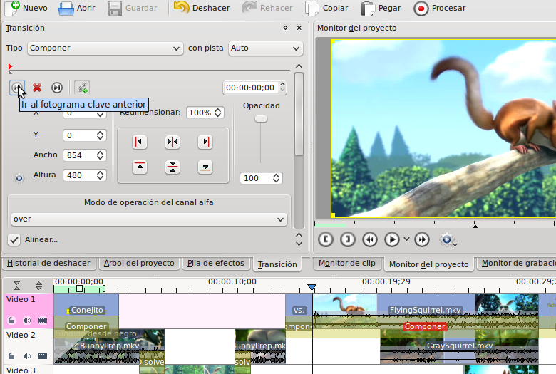
Ahora que estamos en el keyframe inicial, podemos comenzar a
aplicar nuestras preferencias. Lo primero que queremos hacer es reducir
el tamaño de 100% a 30%. Vas a ver que esto cambió el borde amarillo
del Monitor del proyecto. Este borde amarillo es donde nuestro video va
a aparecer; el borde rojo entrecortado es donde la imagen de video se
encuentra.
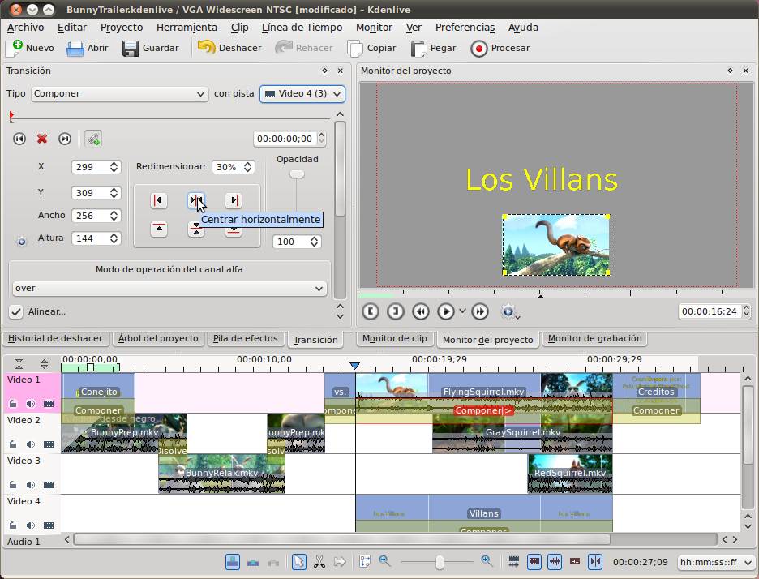
Mueve
el video hacia abajo, justo debajo del texto en el centro. También
queremos usar el botón de alineamiento para asegurar que el video está
alineado con el centro de la imagen.
Ahora podemos hacer lo mismo para los próximos dos videos, excepto
que los colocaremos sobre el texto, a la izquierda y a la derecha (Nota
el valor "Y" de donde pongas cada clip, y ajústalo manualmente para que
se alíneen perfectamente.)
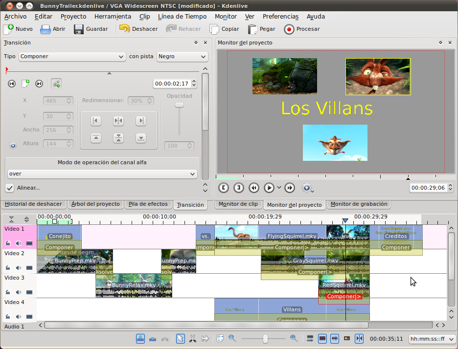
Ahora tenemos todos nuestro videos asignados, y puedes ver la
composición en el Monitor del proyecto. El único problema es que
nuestro audio está un poco desatunado. La razón para esto es que solo
estamos usando el audio que vino con cada pista, y la combinación no se
ajusta bien (los títulos ni siquiera tienen audio). Lo que queremos es
silenciar todas las pistas (haciendo clic en el icono de los parlantes
debajo del nombre de cada pista) y simplemente añadir nuestra pista de
audio por separado en la pista Audio 1, y ajustar la duración del audio
para que quepa en el video. Tal vez puedes añadir un Efecto ->
Fundido -> Fundido entrante/saliente al audio también.
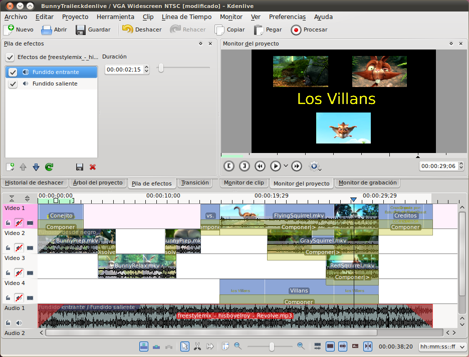
Ahora terminamos con nuestro gran clip! Procésalo a un archivo para poderlo ver en un reproductor de video.
Composición Avanzada
Otro tipo de composición envuelve volver
un video transparente y luego colocarlo sobre otro video. Esto te
permite darle a tu sujeto (en el primer video) un trasfondo que es
diferente de donde el sujeto en realidad se encuentra. Esto es
llamado típicamente una composición de "Green Screen" (pantalla verde),
pero también se el puede referir como "Chroma Keying" o una "Blue
Screen" (pantalla azul). Se le llama "pantalla verde" porque la forma
más fácil de componer esto es hacer que el sujeto se ubique al frente
de un trasfondo completamente verde, y luego usar el programa editor
de video para remover el color verde del video.

Aquí vamos a obtener un clip de una persona frente a una pantalla verde, y colocarlo al frente de un trasfondo con algunas nubes.
Primero, importa estos clips a un nuevo proyecto de Kdenlive. Luego
selecciona la porción del primer clip en la cual el sujeto está frente
a la pantalla verde (00:00:00;15 -
00:00:05;04) y coloca esta selección en la pista Video 1. Luego coloca
el clip de las nubes en la pista Video 2, y recórtalo para que tenga la
misma duración que el Video 1.

Ahora vamos a añadir un efecto a la primera pista. Haz clic-derecho
en Añadir Efecto -> Manipulación de Alpha -> Pantalla Azul. Esto
va a producir el recuadro de la pantalla azul en el pastaña de efectos. En
este pastaña, hay un botón con un icono de un ojo que puedes usar para
seleccionar el color de trasfondo que quieres eliminar. Haz clic en
este botón y luego selecciona el color verde más cerca posible al
sujeto.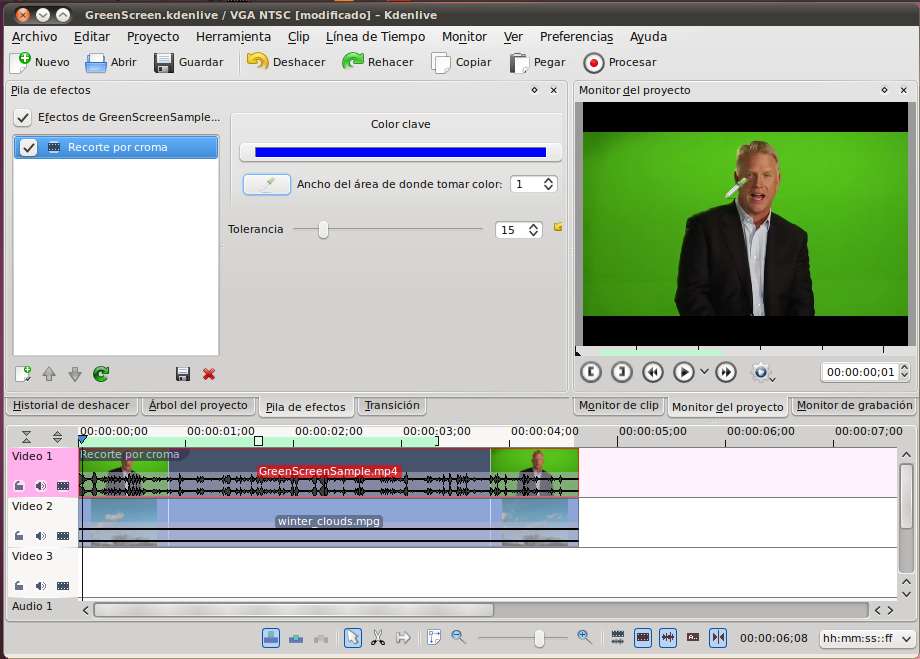
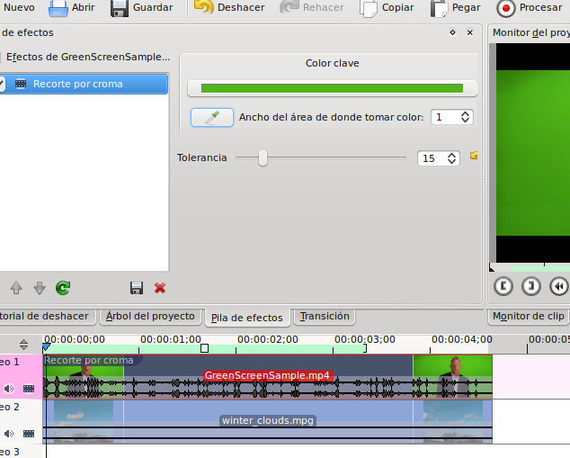
Ahora tenemos nuestras opciones establecidas para remover el
trasfondo verde del primer clip. Sólo tenemos que componer el segundo
clip dentro del primero. Pasa el cursor sobre la esquina inferior
izquierda del primer clip para generar un triángulo verde, y haz clic
en el triángulo para añadir una transición. Estira la transición para
que cubra el clip entero, y cambia la transición de Disolver a
Componer.
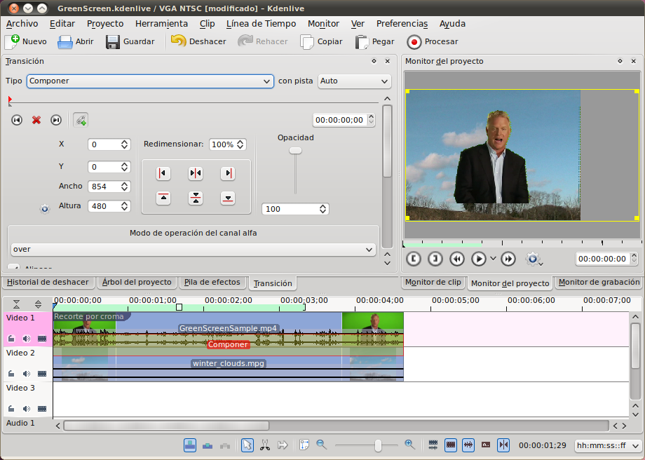
Se ve bastante bien. Lo único que falta es limpiar la imagen un
poco. Primero, el video de trasfondo es de resolución 640x480, así que
si queremos que se muestre en una resolución más alta, no se va a ver
bien, así que reduzcamos el proyecto a ese tamaño. Proyecto ->
Opciones del Proyecto -> Perfil del Proyecto: VGA NTSC.
Además, el sujeto está ocupando una gran porción de la imagen.
Mientras tenemos la composición seleccionada, podemos reducir el tamaño
o mover la imagen del sujeto un poco para que su cara esté ubicada a
dos tercios del camino hacia arriba.
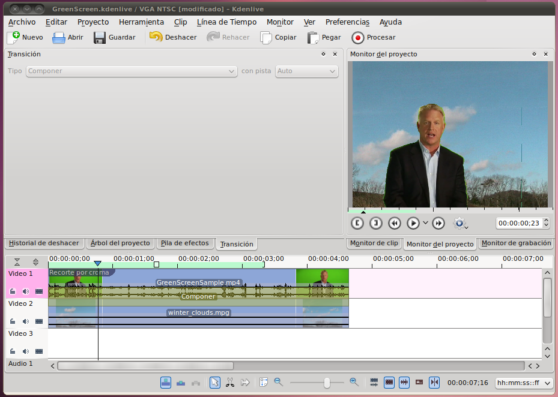
Eso es todo. Procesa el video a un archivo y míralo en un reproductor de video!
Cuando veas tu video procesado, tal vez notes algunos detalles
menores. Los hombros del sujeto están un poco recortados, hay un poco
de verde en su rostro, etc. Esto ocurre porque este video de ejemplo
recibió mucha compresión luego de ser grabado. Cuando hagas edición de
pantalla verde, es importante que obtengas el video original
no-comprimido antes de que pase por otros procesos. Esto le ayudará al
programa a seleccionar correctamente el color de trasfondo (algo que no
hizo perfectamente en nuestro ejercicio).